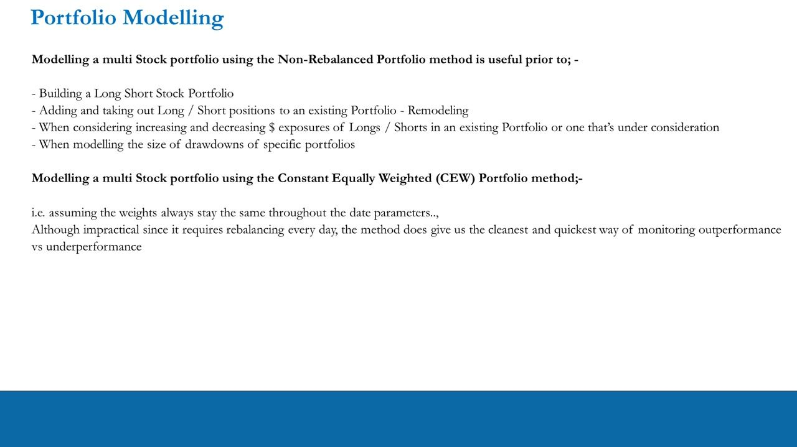
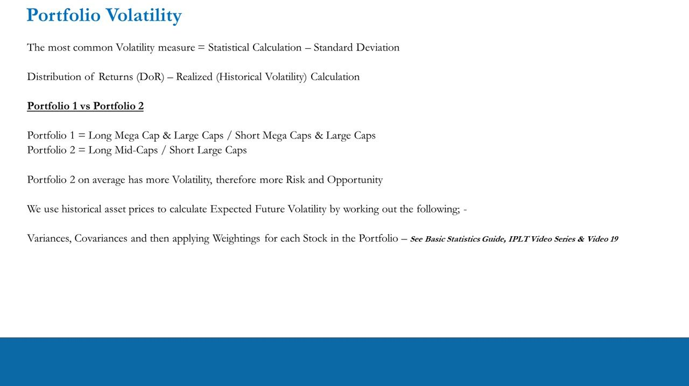
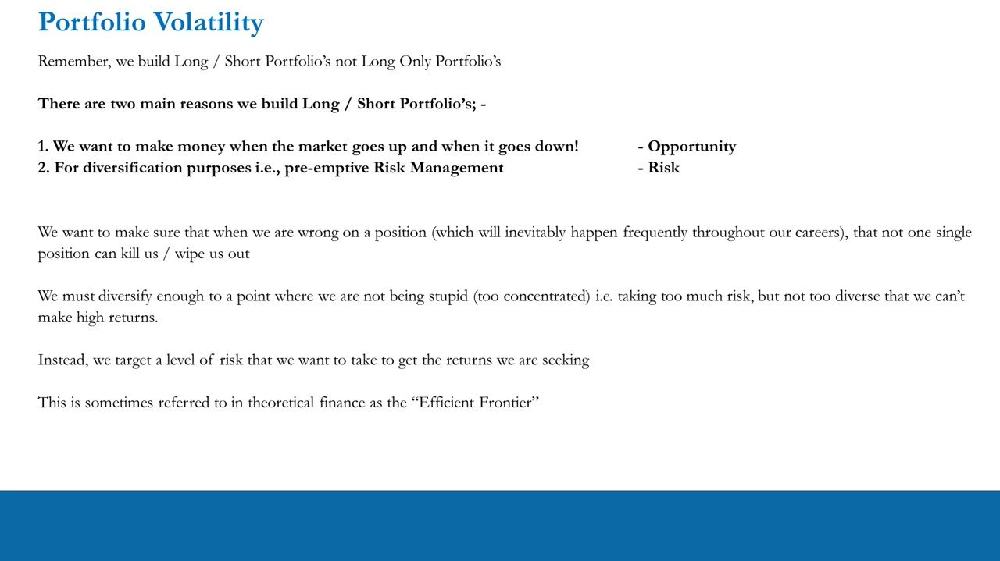
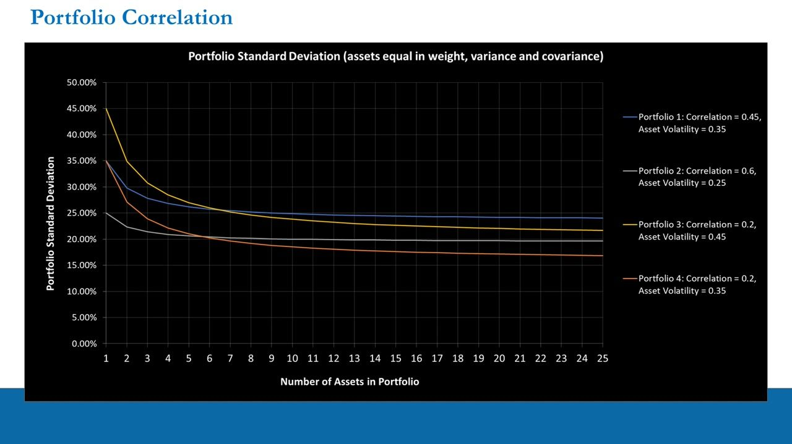
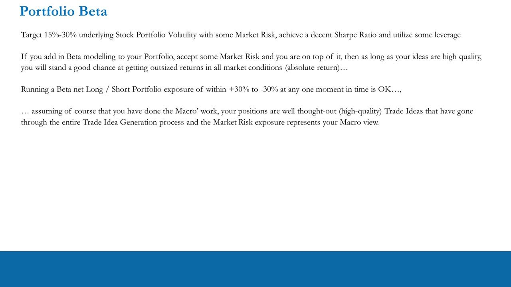
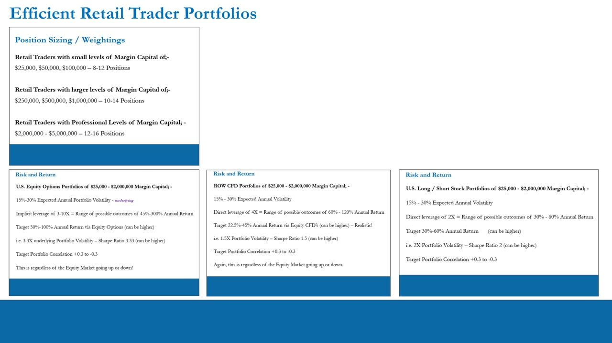

Foundations of Long / Short Portfolio Management Recap
The capstone of the portfolio-construction block (L16-20): modelling, volatility, correlation and beta consolidated into concrete per-account gates that put a retail trader on the Efficient Frontier
Model a non-rebalanced Long/Short book, choose a target risk level (15-30% underlying annual volatility) with correlation held +0.3 to -0.3, run 8-16 high-quality positions sized to your margin tier, keep net beta within +30% to -30% of your macro view, and wrap it in options/CFDs/stock for the return you're after -- that sweet spot is the Efficient Frontier.
The gist
- PORTFOLIO MODELLING: download price data yourself (DIY, no paid software), then model a multi-stock L/S book with the Non-Rebalanced (Long/Hold vs Short/Hold on a $ basis) method for drawdowns and $-exposure decisions, or the Constant Equally Weighted (CEW) method -- impractical (needs daily rebalancing) but the cleanest, quickest way to monitor outperformance vs underperformance.
- PORTFOLIO VOLATILITY = the variability of the book = its risk AND opportunity. You consciously choose the risk level; higher-risk portfolios carry higher expected returns (and drawdowns). Measured by Standard Deviation / Distribution of Returns from historical variances, covariances and weightings. We build Long/Short (not Long-Only) for two reasons -- Opportunity (make money up AND down) and Risk (diversification = pre-emptive risk management so no single wrong position wipes you out).
- The EFFICIENT FRONTIER (Anton's plain-terms use): don't be so concentrated you take too much risk, nor so diverse you can't make high returns -- instead target the level of risk that gives the returns you seek. Hitting the retail gates with high-quality ideas is what 'exposes you to the Efficient Frontier'.
- PORTFOLIO CORRELATION: volatility is driven by (1) the assets' own volatility and (2) their correlations. In small books (a few names) the assets' own volatility dominates; in an 8-12-name retail book the correlations matter far more. As long as pairwise correlation is < 1, adding positions cuts portfolio SD sharply -- lower correlation = more efficient diversification and a lower floor. But adding past ~8-12 gives little further risk reduction (over-diversification) and dilutes idea quality, lowering expected return.
- PORTFOLIO BETA: even a L/S book carries market risk. Beta (stock- and portfolio-level, rolling) tells you your market-risk exposure at any moment. Perfect market-neutrality is near-impossible AND undesirable; beta is always changing and its assumptions can create blind spots or hide risk. Run a net beta-adjusted exposure within +30% to -30% that reflects your macro view.
- EFFICIENT RETAIL TRADER PORTFOLIOS: position count scales with margin tier -- $25k/$50k/$100k -> 8-12; $250k/$500k/$1M -> 10-14; $2M-$5M -> 12-16. All routes share 15-30% expected annual underlying volatility and +0.3/-0.3 correlation, regardless of market direction. Options (3-10x implicit leverage) -> 45-300% range, target 50-100%, Sharpe ~3.33; ROW CFDs (4x) -> 60-120%, target 22.5-45%, Sharpe ~1.5; US stock (2x) -> 30-60%, target 30-60%, Sharpe ~2.
Portfolio Modelling -- CEW vs Non-Rebalanced
- Two foundational skills: (1) download stock price data publicly -- DIY, no paid software subscription; (2) compare historical performance using indexing methods and time series of performance.
- Constant Equally Weighted (CEW) Portfolio: assumes weights always stay the same across the date parameters. Impractical because it requires rebalancing every day, but gives the cleanest, quickest way to monitor whether one stock is outperforming or underperforming another over a period.
- Non-Rebalanced Portfolio: backtests a 2x-stock book on a Dollar basis (Long-and-Hold vs Short-and-Hold) over a period -- i.e. positions are NOT rebalanced daily.
- Model a multi-stock book with the Non-Rebalanced method before: building a L/S stock portfolio; adding/removing L/S positions to an existing book (remodelling); increasing/decreasing the $ exposure of longs/shorts; and modelling the size of drawdowns of specific portfolios.
This recaps the mechanics: the non-rebalanced $-basis model is the working tool for real construction and drawdown estimation, while CEW is the clean lens for pure outperformance monitoring.

Portfolio Volatility -- the risk you choose
- The variability in your portfolio IS its volatility, and therefore its Risk and Opportunity. Like a single stock, portfolios can be high, medium or low risk -- and you choose the level you want.
- Higher-risk portfolios carry higher expected returns; lower-risk portfolios lower expected returns. The upside (and downside) is greater in risky portfolios.
- Most common measure = Standard Deviation (a statistical calculation); realized/historical vol comes from the Distribution of Returns (DoR).
- Expected future volatility is worked out from historical asset prices via Variances, Covariances and then Weightings for each stock (see the Basic Statistics Guide, the IPLT video series and Video 19).
- Example: Portfolio 1 (Long Mega/Large Caps, Short Mega/Large Caps) vs Portfolio 2 (Long Mid-Caps, Short Large Caps) -- Portfolio 2 on average has more volatility, therefore more risk and opportunity.
The recap's core reframing: volatility is not just danger, it is the source of return. You pick the risk level deliberately -- which sets up the Efficient Frontier.

The Efficient Frontier -- Long/Short for opportunity AND risk
- We build Long/Short portfolios, not Long-Only, for two reasons: (1) make money when the market goes up AND when it goes down (Opportunity); (2) diversification = pre-emptive Risk Management (Risk).
- When you are wrong on a position -- which will happen frequently across a career -- no single position should be able to kill you / wipe you out.
- Diversify enough not to be stupid (too concentrated, too much risk), but not so diverse that you can't make high returns.
- Instead, target the level of risk you want in order to get the returns you're seeking -- in theoretical finance this is the 'Efficient Frontier'.
Anton's plain-terms Efficient Frontier: deliberately sit at the risk level that maximises return for your idea set, rather than going in blind or over-diversifying.

Portfolio Correlation -- the over-diversification trap
- Two core factors drive a portfolio's volatility: (1) the volatility of the assets in it; (2) the correlations between those assets. Which matters more depends on the size of the book (number of positions).
- As long as pairwise correlation is < 1, adding assets makes portfolio volatility fall significantly. The lower the correlation, the more efficient the diversification and the faster risk decreases.
- In small books (one/a few positions) the individual assets' volatility dominates the $ outcome; in larger 8-12-position retail L/S books, the correlations between assets matter much more.
- Over-diversification: (1) marginal risk reduction beyond the 8-12 gate is small or non-existent -- decreasing benefit; (2) you can't generate an infinite supply of high-quality trade ideas, so more diversification lowers idea quality and therefore lowers expected portfolio return.
- Keep the Portfolio Volatility & Correlation spreadsheet to check the book has enough volatility for outsized returns yet is diverse enough for sensible risk, with correlation landing within +0.3 to -0.3.
The recap's headline correlation point: don't just keep adding names. Beyond 8-12 positions the risk benefit fades while idea quality drops -- diversify on correlation, not count.

Portfolio Beta -- accept sensible market risk (+30% to -30%)
- Even running Long/Short, you must be willing to accept some market risk at any moment in time. Beta (at stock and portfolio level) tells you your market-risk exposure.
- Being close to market-neutral can theoretically be achieved through beta adjustment, but being completely market-neutral is near-impossible AND undesirable for a trader/PM.
- Beta is always changing (hence rolling-beta analysis); you'd have to re-adjust every day for a 'perfect' beta hedge. Past-data assumptions create blind spots (thinking you've eliminated market risk when you haven't), and beta reliance can breed complacency or even be abused to hide real risks.
- You always walk a tightrope between Opportunity (outsized absolute returns) and Risk (control). Aim for a beta-adjusted, sensible level of market risk that roughly aligns with your macro view -- it doesn't have to be 100% accurate.
- Run a net Beta-adjusted Long/Short exposure within +30% to -30% at any one moment -- OK provided you've done the macro work, your positions are high-quality ideas through the full trade-idea process, and the market-risk exposure represents your macro view.
The recap's beta message: don't chase perfect neutrality. Use rolling beta to know your exposure, then deliberately hold a net tilt (+/-30%) that expresses your macro view -- absolute return, not benchmark-relative.

Efficient Retail Trader Portfolios -- position sizing + the three routes
- Position count by margin-capital tier: $25,000 / $50,000 / $100,000 -> 8-12 positions; $250,000 / $500,000 / $1,000,000 -> 10-14 positions; professional $2,000,000-$5,000,000 -> 12-16 positions. More capital buys slightly more diversification, but marginal risk reduction beyond ~8-12 is small (over-diversification).
- All three routes share the SAME underlying book: 15%-30% expected annual portfolio volatility (underlying) and correlation +0.3 to -0.3, regardless of the equity market going up or down. They differ ONLY in leverage.
- US Equity Options ($25k-$2M margin): implicit leverage 3-10x -> range of possible outcomes 45%-300% annual return; target 50%-100% (can be higher); i.e. ~3.3x underlying vol -> Sharpe Ratio ~3.33. Available to US AND rest-of-world traders. Long calls/puts cap downside at the premium paid, unlike CFD/stock shorts.
- ROW CFD ($25k-$2M margin): direct leverage 4x -> range 60%-120%; target 22.5%-45% (realistic, can be higher); i.e. ~1.5x vol -> Sharpe ~1.5 (the minimally-acceptable Sharpe). Not accessible to US traders.
- US Long/Short Stock ($25k-$2M margin): direct leverage 2x -> range 30%-60%; target 30%-60% (can be higher); i.e. ~2x vol -> Sharpe ~2. A US stock trader must be a better trader (higher Sharpe) to match the ROW CFD PM's return, given the lower leverage cap.
- Worked example: a $50,000 account at ~17.5% annual portfolio SD, trading options over the year at 3.3x Sharpe -> ~59-60% return, even with a well-diversified L/S book. The top of the vol range (~30%) is hard in a diversified 8-12-name book; hitting the lower end (~15-22.5%) with sensible vol is a good target.
- Always target ranges, not exact numbers -- fall within the gates and you've done well. Ideas must be high-quality, driven by Fundamentals & Catalysts on a 20-60-day horizon. Use the spreadsheets; don't get lost in endless rabbit-hole calculations -- work smart not hard. Hit the gates (50-100% target, 8-12 quality L/S positions, solid Sharpe, some leverage) and you are exposing yourself to the Efficient Frontier. Don't forgo idea quality for diversification -- you must have BOTH.
- Reality check: 99% of retail traders will never do ANY of this. For anyone going pro, a basic grasp of all of it is essential -- it is what you'd learn in your first 1-2 years as a graduate at a hedge fund or investment bank.
The consolidated summary of the whole block: the underlying stock book is identical across routes; only the leverage wrapper (and its Sharpe) differs. Sizing scales with margin, but idea quality -- not position count -- is the real constraint.

Conclusions -- you're running a business
- This block conquered a major part of the 'scientific art' of trading and portfolio management -- a lot of work, hard to grasp initially, but the groundwork needed to climb the Competency Hierarchy.
- The previous 4 videos illustrate the gap between Unconscious Competence (professional traders) and Unconscious Incompetence (retail traders).
- Your job isn't one or two big trades then disappearing to the 'casino' -- that's a fairy tale and the vast majority blow up. The job is to make money consistently over thousands of career trades over many years, and HOW you make it matters (Sharpe).
- You are running a business: it requires process, dedication, time management and statistical awareness of how the business works. This Foundations of Portfolio Management section overlaps with the Risk Management & Trader Statistics section.
The recap closes by framing portfolio management as a repeatable business process measured on risk-adjusted consistency, not on one-off wins.
Glossary
- Constant Equally Weighted (CEW) portfolioA model that keeps position weights equal throughout the period (requires daily rebalancing). Impractical to run, but the cleanest, quickest way to monitor one stock's outperformance vs another.
- Non-Rebalanced portfolioA Long-and-Hold vs Short-and-Hold model on a Dollar basis where positions are NOT rebalanced daily -- the working tool for building books, remodelling exposures and estimating drawdowns.
- Portfolio volatilityThe variability of the book = its risk AND opportunity. Measured by Standard Deviation / Distribution of Returns from historical variances, covariances and weightings. You choose the level you want.
- Efficient FrontierAnton's plain-terms use: deliberately target the level of risk (portfolio volatility) that gives the returns you seek -- diversified enough not to be reckless, not so diverse you dilute returns. Reached via 8-12 quality L/S positions, 15-30% vol, correlation +0.3/-0.3, solid Sharpe and some leverage.
- Portfolio correlationThe pairwise correlation between assets. As long as it is < 1, adding positions cuts portfolio volatility; lower correlation = more efficient diversification. Target band +0.3 to -0.3.
- Over-diversificationAdding positions past ~8-12: the marginal risk reduction is small or nil, and idea quality falls (you can't source infinite high-quality ideas), lowering expected portfolio return.
- Portfolio BetaThe book's market-risk exposure (stock- and portfolio-level, rolling). Perfect market-neutrality is near-impossible and undesirable; run a net beta-adjusted exposure within +30% to -30% that reflects your macro view.
- Efficient Retail Trader PortfolioThe consolidated construct: position count by margin tier (8-12 / 10-14 / 12-16) on a shared 15-30% underlying vol and +0.3/-0.3 correlation, wrapped as options (3-10x, Sharpe ~3.33), CFDs (4x, Sharpe ~1.5) or US stock (2x, Sharpe ~2).
- Implicit vs direct leverageThe only difference between the three routes: options give implicit leverage of 3-10x per $ of margin (with downside capped at the premium on long options); CFDs give direct 4x; US stock gives direct 2x (50% margin).
- Absolute returnMaking money whether the market rises or falls, targeted regardless of market direction -- the objective of the Long/Short book across all three instrument routes.